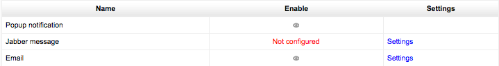

Message Settings¶
Enabling / Disabling instant messaging sitewide¶
The instant messaging system in Moodle is enabled by default. It may be disabled by a site administrator in Administration > Site administration > Advanced features > Enable messaging system.
Manage Message outputs¶
There are three default types of output methods for messaging: popup notices, Jabber IM type messages, and messages sent as email.
Each of these can be enabled or disabled independently by a site administrator in Administration > Site administration > Plugins > Message outputs > Manage message outputs.
By default Popup and Email are both enabled, though email will only work of course if the site has been properly configured to deliver email. Jabber is off by default and needs to be configured first.
Default message outputs¶
The user defaults for these are set in Administration > Site administration > Plugins > Message outputs > Default message outputs.
You can specify the default outputs for each type of message that Moodle can send.
Permittedness¶
You can also set to what degree each type of message is enabled, and whether users are able to change these default settings in their profiles:
- Disallowed - the message of chosen type will never be delivered through the chosen output, user is not allowed to change the personal preference for this combination of message type and output.
- Permitted - the message of chosen type is allowed to be delivered through the chosen output, default preferences can be set by administrator using the checkboxes below, user can control this preference on the messaging preferences page (and change the suggested defaults the most preferable way).
- Forced - the message of chosen type will be delivered through the chosen output, user is not allowed to change the personal preference for this combination of message type and output.
Logged in / Offline¶
You can set whether each of these will be sent when the user is online through the messaging system interface available to users in their profiles, and/or whether each output is sent via email.
Ordering of messaging settings¶
Because users might have many different messaging options, they are ordered into different components -for example, Forum, Assignment, System, Enrolments etc.
Except for Personal messages between users which refers to the interaction messaging tool on a user profile, the other messages are generated by events in Moodle.
Email¶
SMTP hosts¶
SMTP stands for Simple Mail Transfer Protocol. The SMTP host is an email relay that will take the email from Moodle and send it to users. You will need to set this only if your server does not allow mail relay. Otherwise, PHP will send out the mail using its built-in mail server. All the email sent by forums and other modules will be sent through this host.
Most SMTP hosts make use of the default port 25 to for listening email traffic. However, occasionally a non-default port is used. In such cases, entering an SMTP host followed by a colon (i.e. :) and the port number should work. For example, if my SMTP host is myemailserver.com and it listens on port 587 or 465 (most common) instead of port 25 I would enter the SMTP host as myemailserver.com:587.
SMTP security¶
If the SMTP server requires a secure connection, the correct protocol type, SSL or TSL, may be set.
Jabber message¶
Jabber must be configured before use.
(Could someone with working settings fill this out with example?)
- Host - The server to connect to to send jabber message notifications - full hostname (e.g. jabber.org)
- Server - XMPP host ID (can be left empty if the same as Jabber host)
- Username - The user name to use when connecting to the Jabber server
- Password - The password to use when connecting to the Jabber server
- Port - defaults to 5222